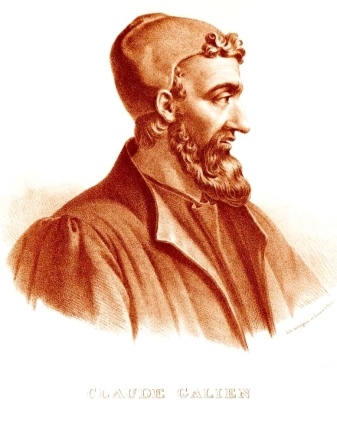
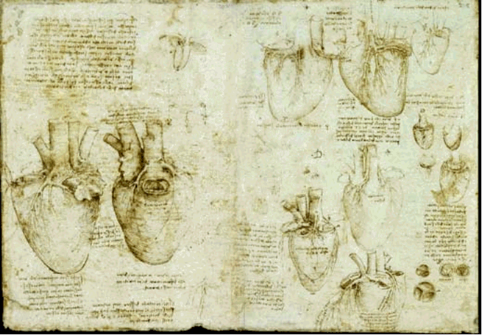

"Hier is mijn geheim, mijn simpele geheim.
Alleen met het hart kun je goed zien. Wat essentieel is, is
onzichtbaar voor het oog." ~Antoine de
Saint-Exupéry
Samen met vele klassieke filosofen en
wetenschappers beschouwde de Griekse filosoof Aristoteles
(384–322 v.Chr.) het hart als het centrum van het lichaam en
als de zetel van het leven, de emotie, het verstand, de wil, de
intelligentie, het levensdoel en de geest. Aristoteles beschreef
organen rond het hart, met name de longen en de hersenen, als
simpelweg nodig om het hart te koelen. In de tweede eeuw na
Christus schrijft de arts, chirurg en filosoof Aelius Galenus
(beter bekend als Galen van Pergamon) zijn bekende
wetenschappelijke verhandeling 'Over het nut van de delen van het
lichaam' waarin hij het
hart noemt als het orgaan dat het meest verwant is aan de ziel;
"de bron van de aangeboren
warmte waardoor het dier wordt bestuurd".

De ideeën van Galen domineerden de algemene
(medische) wetenschap van de 2-de tot het midden van de 17-de eeuw.
In 1025 publiceerde Avicenna ondertussen zijn 'Canon van de
Geneeskunde' waarin het
hart wordt uitgelegd als 'een intelligent orgaan dat alle andere organen
aanstuurt en controleert' en '[het hart is] de wortel van alle
vermogens en geeft de vermogens van voeding, leven, vrees en
beweging aan een aantal andere leden en
organen'.

De tekeningen die Leonardo da Vinci van het hart
maakte (pl. 1490) illustreren het typische Renaissance beeld van
het hart als een Galenisch orgaan met twee fundamentele kamers,
gedeeld door het septum. Leonardo beschrijft zelf de overeenkomst
die hij ziet tussen de pompende hartbewegingen en de afwisseling
tussen berouw en verlangen.
In de ‘Oxford Englisch Dictionary’
staat een duizend jaar oude definitie van het hart en van de
relatie tussen het hart en geest/spiritualiteit:
"Hart: De zetel van iemands
diepste gedachten en geheime gevoelens; iemands diepste wezen; de
diepten van de ziel; de ziel, de geest."*
Dankzij een opleving in de anatomie tijdens de
renaissance maakte de medische wetenschap rond 1550 voorzichtige
stapjes om het hart in verband te brengen met een 'bloedsomloop'.
Toch duurde het tot de Engelse arts William Harvey in 1628 zijn
wetenschappelijk werk over 'de circulatie van het bloed'
publiceerde dat een alternatief voor de Galense fysiologie breder
en algemener aanvaard werd. De notie van Aristoteles over de
belangrijkheid van het hart hield Harvey echter recht overeind. In
1653 schrijft hij daarover: "Het hart is gelegen achter de 4-de en
5-de rib. Het is daarmee het belangrijkste onderdeel omdat het op
de belangrijkste plek, zoals het midden van een cirkel, het midden
van het essentiële lichaam ligt."
Al in het oude Egypte was het hart een belangrijk
(onder)deel van de ziel: de zetel van emoties, gedachten, wil en
intentie en (daarom) de sleutel tot het leven na dit leven. In de
traditionele Chinese geneeskunde is het hart
(心) het centrum van 'Shen'
(geest, god of godheid, spiritualiteit of bovennatuurlijk,
bewustzijn etc.) en tot op de dag van vandaag staat het
teken 心 voor zowel het hart
als voor 'mind', ziel, geest of centrum, kern.
In de jaren sinds Leonardo da Vinci heeft de
definitieve splitsing tussen 'de wetenschap' en 'de rest' zich
geleidelijk maar onafwendbaar voltrokken. Rienk Vermij** noemt
dit 'een lange weg
naar verzelfstandiging'.
Die ontwikkeling lijkt te zijn doorgeschoten tot de ontwikkeling
van een dogmatische 'zuivere wetenschap'. Gebrek aan 'empirisch
bewijs' is in die moderne wetenschap steeds vaker voldoende
tegenbewijs en op basis daarvan wordt een aantal zaken die
duizenden jaren lang aan het hart werden toegeschreven als 'bewezen
onjuist' beschouwd. Daarbij komt dat de ontwikkeling en inzet van
nieuwe technologie er toe heeft geleid dat het hart de centrale
plek in het menszijn volledig heeft af moeten staan aan het brein.
Zou Aristoteles nu leven dan zou hij wellicht ook, samen met de
neurologen, "het brein als het centrum van het lichaam en als de
zetel van het leven, de emotie, het verstand, de wil,
intelligentie, het levensdoel en de geest" beschouwen. Het boek van
neurobioloog Dick Swaab 'Wij zijn ons Brein' is een uiterst
geslaagd voorbeeld van het axioma dat de schepping de schepper
is... en alles wat daaruit volgt. Het door neurowetenschappers
concentreren op (alleen maar) die hersenen als 'centrum van
mens-zijn' moet helaas wel ontaarden in ook het regelmatig
omdraaien van oorzaak en gevolg, immers kunnen de hersenen als kern
van ons wezenlijke mens-zijn 'dus' uiteindelijk alleen maar
oorzaken onthullen... Zo heeft een team van wetenschappers
onderzoek gedaan naar activiteiten in de hersenen wanneer een mens
empathisch is. Patrick R. Hof, M.D., professor in de
Neurowetenschap van het Mount Sinai Medical Center in New York zegt
dat hij en zijn team voor het eerst hebben aangetoond dat een
bepaald plekje in het brein (anterior insular cortex) de plek is
waar menselijke empathie vandaan komt... Het is een conclusie van de categorie "Ik
pas in mijn jas. Mijn jas past in mijn tas. Dus ik pas in mijn
tas." Het is het omdraaien van Oorzaak en Gevolg. Volgens dezelfde
logica als die welke Hof en de meeste moderne neurowetenschappers
hanteren is in een auto de snelheidsmeter de plaats waar de
snelheid van de auto vandaan komt...
Van het 'orgaan van de ziel' is het hart
'wetenschappelijk' en functioneel tot holle spier, tot
‘alleen maar’ de pomp van de bloedsomloop gereduceerd,
en van koelradiator voor het hart is het brein 'wetenschappelijk'
en functioneel tot oorzaak én gevolg van ons individueel
menszijn opgeklommen. Zoals Bredero rond 1600 al zei: het kan
verkeren. Dit boek geeft een aanzet om een positie te vinden die,
net als de waarheid, ergens in het midden tussen deze twee extremen
ligt, het allemaal met elkaar in balans belicht én deze
informatie praktisch toepasbaar te maken.
___________________________________________
* Heart: The seat of one’s inmost
thoughts and secret feelings; one’s inmost being; the depths
of the soul; the soul, the spirit.
**Prof. dr. Rienk Vermij - University of
Oklahoma, department of history of science.